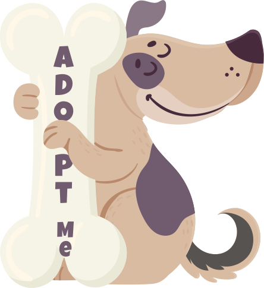
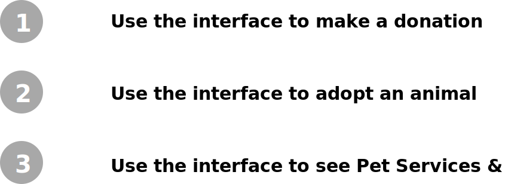
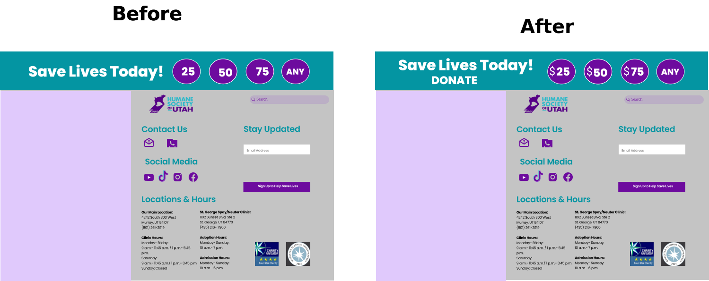

ABOUT THE PROJECT
About
The Humane Society of Utah (HSU) is a private, non-profit animal welfare organization. HSU relies solely upon funding from individuals, foundations, and businesses. The goal of this project was to re-design the HSU website with a focus on the information architecture improvements as well as the mobile channel experience design.
Disciplines
& Tools
& Tools
User Research (Interviews & Surveys) & Analysis, Mobile User Experience Design (UI/UX), Interaction Design, Wireframing, Prototyping, Zoom User Testing, Adobe XD, Figma, Miro, In Vision
Team
The team for this project consisted of:
- Marg Papakostas - Lead UX/UI Designer & Researcher
- Kimberly Zelaya - UX Researcher
- Kena Sherman - UX/UI Designer & Researcher
My Responsibilities
- Defining the scope & Strategy + Planning the project
- Conducting User Research (User Interviews and Surveys)
- Delivering solutions through UX Design methods and techniques (Interaction Design, Wireframing, Prototyping, User Testing and Visual Design)
HSU Current Website

Project Overview
We accomplished a UX design concept for mobile and desktop that represents people in Utah who need to pet information, advice and medical care in low cost. The Humane Society of Utah offers a wide range of services that benefit both the owners as well as the pets. One user said:
"I adopted all my three dogs from HSU. They do an amazing job with animals and rehoming. Also, they offer many medical services at a very low cost! I wish they offered teeth cleaning as well!"
The Design Process
We kicked off our project with some discussions and planning, while keeping in mind that we needed to understand who our users were and what their pain points were. We thought of the following methodology to tackle this problem.
STEP 1: USER RESEARCH & ANALYSIS
User Research & Analysis
Our team discussed the users that we should target. We wanted to focus and target anyone who is a dog owner, wants to get a dog and people that they have given up on their pet. We also wanted to focus on users that have already used services of HSU in the past and how that affected them.

Research Goals
We wanted to understand user behavior and pain points on people who own a dog, who need to give up on their pet, who visit the HSU website or shelter and their goals, and who know about HSU Organization.
Survey
To begin our research, we crafted a survey to send out to people who fit our target audience most. We asked them general questions about their pets and if they use HSU services. Some of the other questions were also to understand which features would help improve life with a pet. We collected a total of 33 survey responses, some of the key findings of which were as follows:
Survey Responses: Google Forms
User Interviews
Next, we conducted user interviews. We wanted to understand their pet's needs, plus, what the main triggers were to contact HSU if they wanted to relocate, rehome, or give up their pet. To get this started, we created a user interview protocol based on our research goals and interviewed 8 participants that fit our target audience criteria. We also took notes during our interview sessions to gather more data, conducting user interviews via Zoom was a bit more challenging especially when it came to observe our users.

User Personas
Research Data Analysis
We analyzed the research data that we had gathered by using the affinity mapping technique. We thoroughly discussed our individual findings and tried to group them into categories.

Research Data Analysis-Affinity Mapping
Research Data Synthesis Key Findings
After our analysis, we extracted key findings from our overall survey response data and user interview data. These were as follows:

STEP 2: INFORMATION ARCHITECTURE
Card Sorting
Since the purpose of the redesign was to improve the information architecture of the Humane Society of Utah website, we conducted Card Sorting and Tree Testing studies to gain a better understanding of the target users' mental models to guide the creation of a revamped information architecture.
We created 30 cards to be sorted into categories by users and analyzed the results to formulate a draft information architecture:
We created 30 cards to be sorted into categories by users and analyzed the results to formulate a draft information architecture:

Site Map
The Site Map was then finalized after analyzing the overall findings from the Card Sorting, using Affinity Mapping techniques and making necessary modifications to the draft Site Map:
STEP 3: COMPETITOR ANALYSIS
Competitor Analysis
For the next phase, we moved on to Competitive Analysis, where we looked at some of the websites that already existed in the market, which we could learn from. We looked at the following:

Competitor Analysis across 4 websites
We analyzed these 4 websites across 5 dimensions: Navigation, Feature Analysis, Competitive Advantage, Strengths, Weaknesses, and rated each of them on these criteria on a scale of 1 to 5 (5 being very good and 1 being very poor). This helped us figure out what features of which websites should we gain inspiration from and what mistakes to avoid. The dimension-wise rating matrix can be seen below:
Stakeholder Interview

We were able to have a better understanding of the strengths and weaknesses after our interview with the stakeholder. She verified our initial research/interviews with data that she shared from Google Analytics. She validated questions such as “which are the most commonly visited pages?”, “why people visit the Humane Society of Utah aside from adoption and surrendering pets?”, or “are you aware of any blockers on your site?”. We developed a better vision (or direction) as we had an informed and data-driven understanding of both strengths and weaknesses of the site. As we continued working on the project, each new interview and usability test produced new ideas and opportunities for our prototypes. The SWOT analysis helped us understand better the weakness, strengths, opportunities as well as the threats of the website we redesign.
{kind=link}
STEP 4: INTERACTION DESIGN
User Flow
This step in our process marked the transition from Information Architecture to Interaction Design. The first thing we did before we started sketching was a User Flow.
User Flow Table
We first began by brainstorming ideas with all our past learnings in mind and sketched out several ideas on a whiteboard. Then we shortlisted the most interesting and feasible ideas for our next steps.

Low - Mid Fidelity Prototypes
With our Brainstorming session, we discovered good ideas, to move to the next step, which involved creating quick low-fidelity prototypes. For this step, we began by defining the important user flows based on our research and with focus on the user journeys that were critical to the organization's success. Our areas of focus were:
We then designed and built two interactive low mid-fidelity prototypes that satisfied the selected user flows, one for mobile devices and another for desktop. We used Figma to quickly create the designs and wire them together with respect to the user flows.
Prototype Evaluation
Once our low-fidelity prototypes were ready, we moved to the evaluation step, which involved users testing out our prototype and providing their feedback.

Tasks Defined for User Testing
I performed two tests via Zoom, where I asked users to perform the above three tasks on the prototypes. The users were asked to use the 'think-aloud' method. While they performed these tasks, I observed them and asked questions to gain a deeper understanding of what improvements could be made. The key findings of the user tests were as follows:

The first version did not make sense to our users, they were not able to donate money because of the lack of the dollar sign as well as the donate icon.
On the top navigation bar we added the helpful tips button after testing. We also created a more user-friendly page for the main areas of our focus: Adoptions, Donations and Pet Services.
In Programs and Pet Services, we added icons for the most popular pet services. We also spread out the left list more with programs and services.
Hi-Fidelity Prototypes
After thorough user testing, we made improvements to the prototypes and then started building the high-fidelity digital prototype. We made use of the Sketch App for the designs and Marvel App for prototyping:

Hi-Fidelity Mockup
Final Deliverables in Action
Mobile GIF
Reflection
The Humane Society of Utah redesign project was a great journey focused on designing digital interfaces from a user-centered perspective. The entire user-centered design lifecycle was covered in this project, from the User Research to conceptualizing Prototypes and then refining them through User Testing and Iterations. We made use of several powerful design methods aimed at understanding users and their contexts when using HSU website and used trending industry-standard tools to create design deliverables that effectively communicate our insights.
-Thank You-
UX/UI Design Project
Re-designing the HSU website.
Humane Society Website Revision
UX/UI Design Project
Designing an app that helps low income families to eat healthier at a lower cost.
What's Cookin' App Design
UX/UI Design Project
Designing an app that helps pet owners take better care of their pets with training, socialization, and motivation.
Happy Dog App Design
UX/UI Design Project
Re-designing a government website.